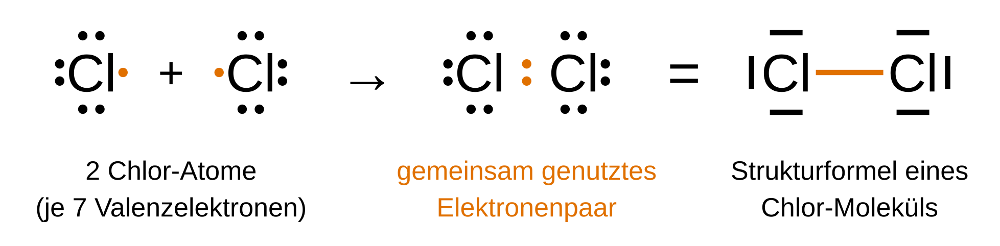
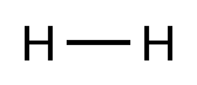
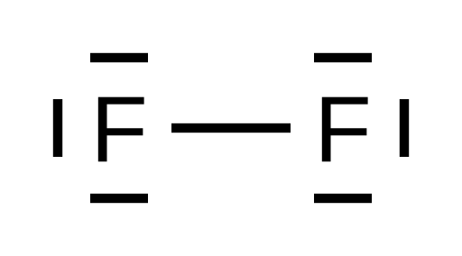
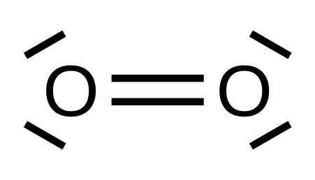
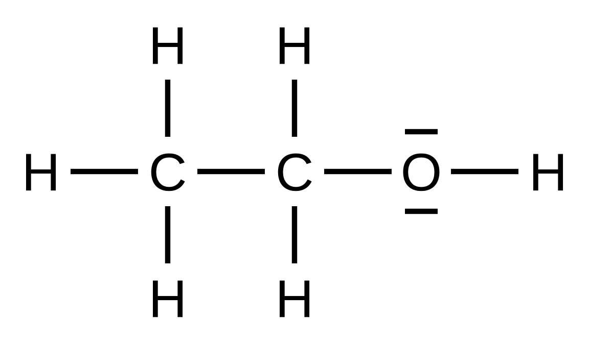

So nutzen Sie die Hilfen: Versuchen Sie es erst allein. Öffnen Sie dann Hilfe 1, danach Hilfe 2. Die Lösung dient zur Kontrolle – vergleichen Sie sie mit Ihrer eigenen Antwort und verbessern Sie diese.
Aufgabe 1: Drei Arten der chemischen Bindung
Ergänzen Sie die Übersicht über die drei Arten der chemischen Bindung!
Hilfe 1
Schauen Sie auf die Bindungspartner: nur Metallatome, nur Nichtmetallatome oder beides? Die Metallbindung ist als Beispiel schon ausgefüllt.
Hilfe 2
Ionenbindung: Metallatome geben Elektronen an Nichtmetallatome ab – es entstehen Ionen (Stoffgruppe: Salze). Atombindung: nur Nichtmetallatome, sie teilen Elektronenpaare (Stoffgruppe: molekulare Stoffe).
Lösung (erst nach eigenem Versuch öffnen!)
Ionenbindung – Metallatome + Nichtmetallatome (bilden Ionen) – Salze – NaCl. Atombindung – Nichtmetallatome + Nichtmetallatome – molekulare Stoffe – z. B. Wasser (H₂O).
Aufgabe 2: Begriffe definieren
Definieren Sie die Begriffe Atombindung, Molekül, Elementmolekül und Verbindungsmolekül!
Hilfe 1
Alle vier Begriffe sind im Text fett gedruckt. Eine Definition beantwortet die Frage „Was ist das?“ in einem Satz: Oberbegriff + besonderes Merkmal.
Hilfe 2
Satzanfänge: „Eine Atombindung ist eine Bindung zwischen …, bei der …“ – „Ein Molekül ist ein Teilchen aus …“ – „Ein Elementmolekül besteht aus …“ – „Ein Verbindungsmolekül besteht aus …“
Lösung (erst nach eigenem Versuch öffnen!)
Atombindung: Bindung zwischen Nichtmetallatomen durch gemeinsam genutzte (bindende) Elektronenpaare; synonym: Elektronenpaarbindung, kovalente Bindung. Molekül: Teilchen aus zwei oder mehr Atomen, die über Atombindungen fest verbunden sind. Elementmolekül: Molekül aus nur einer Atomsorte (z. B. Cl₂). Verbindungsmolekül: Molekül aus zwei oder mehr verschiedenen Atomsorten (z. B. H₂O).
Aufgabe 3: Die neun Elementmoleküle
Nennen Sie die Summenformeln der neun Elementmoleküle!
Hilfe 1
Merksatz: „Der HNO im 7. Stock“ – H, N, O und die vier Elemente der VII. Hauptgruppe bilden zweiatomige Moleküle.
Hilfe 2
Dazu kommen Schwefel (8 Atome) und Phosphor (4 Atome). Die Anzahl der Atome schreibt man als Index.
Lösung (erst nach eigenem Versuch öffnen!)
H₂, N₂, O₂, F₂, Cl₂, Br₂, I₂, S₈, P₄
Aufgabe 4: Wie erreichen Chlor-Atome die Edelgaskonfiguration?
Erklären Sie am Beispiel des Chlor-Moleküls, wie die beiden Chlor-Atome die Edelgaskonfiguration erreichen!
Hilfe 1
Wie viele Valenzelektronen hat ein Chlor-Atom (VII. Hauptgruppe)? Wie viele fehlen bis zur Edelgaskonfiguration? Schauen Sie sich Abb. 2 an.
Hilfe 2
Jedes Chlor-Atom gibt ein Elektron in ein gemeinsames Elektronenpaar. Zählen Sie für ein Chlor-Atom: drei freie Paare (6 Elektronen) + das gemeinsame Paar (2 Elektronen) = ?

Lösung (erst nach eigenem Versuch öffnen!)
Ein Chlor-Atom besitzt sieben Valenzelektronen; ihm fehlt ein Elektron zur Edelgaskonfiguration. Jedes Chlor-Atom steuert ein Valenzelektron zu einem gemeinsamen, bindenden Elektronenpaar bei, das beiden Atomen gleichzeitig gehört. Zusammen mit seinen drei nicht-bindenden Elektronenpaaren besitzt jedes Chlor-Atom damit acht Valenzelektronen (Oktett) – beide erreichen die Edelgaskonfiguration.
Aufgabe 5: Summenformel und Strukturformel vergleichen
Vergleichen Sie die Informationen, die die Summenformel und die Strukturformel eines Chlor-Moleküls liefern!
Hilfe 1
Vergleichen heißt: Gemeinsamkeiten UND Unterschiede nennen. Was verraten beide Formeln? Was zeigt nur die Strukturformel?
Hilfe 2
Beide: Art und Anzahl der Atome. Nur die Strukturformel: Welche Atome sind verbunden? Welche Bindung (Einfachbindung)? Wie viele freie Elektronenpaare?
Lösung (erst nach eigenem Versuch öffnen!)
Beide Formeln zeigen, dass das Molekül aus zwei Chlor-Atomen besteht. Nur die Strukturformel zeigt zusätzlich, wie die Atome verbunden sind (eine Einfachbindung) und dass jedes Chlor-Atom drei nicht-bindende Elektronenpaare besitzt.
Aufgabe 6: Elementmoleküle H₂, F₂, O₂, N₂
Zeichnen Sie die Strukturformeln und geben Sie die Bindungsart an!
Hilfe 1
Bindigkeit = 8 − Hauptgruppennummer (H: 1). F: 1, O: 2, N: 3 → so viele Elektronenpaare teilen die beiden Atome miteinander.
Hilfe 2
O₂: zwei gemeinsame Paare, jedes O-Atom behält zwei freie Paare. N₂: drei gemeinsame Paare, jedes N-Atom behält ein freies Paar. Zählen Sie nach: Hat jedes Atom 8 Elektronen?
Lösung (erst nach eigenem Versuch öffnen!)

H₂: Einfachbindung

F₂: Einfachbindung

O₂: DoppelbindungN₂: Dreifachbindung
Aufgabe 7 (★ Wahl): Warum ist Stickstoff so reaktionsträge?
Erklären Sie mithilfe der Strukturformel des Stickstoff-Moleküls und der Bindungsenergien, warum Stickstoff so reaktionsträge ist!
Hilfe 1
Welche Bindung liegt im Stickstoff-Molekül vor (Aufgabe 6)? Vergleichen Sie die Bindungsenergien von Cl–Cl, O=O und N≡N.
Hilfe 2
Die Bindungsenergie ist die Energie, die man braucht, um die Bindung zu spalten. Je größer sie ist, desto … Damit Stickstoff reagiert, müssen seine Moleküle …
Lösung (erst nach eigenem Versuch öffnen!)
Im Stickstoff-Molekül teilen die beiden Atome drei bindende Elektronenpaare (Dreifachbindung). Diese Bindung ist mit 945 kJ/mol sehr stark – viel stärker als die Einfachbindung im Chlor-Molekül (242 kJ/mol) oder die Doppelbindung im Sauerstoff-Molekül (498 kJ/mol). Um Stickstoff-Moleküle zu spalten, ist sehr viel Energie nötig; Stickstoff reagiert deshalb kaum.
Aufgabe 8: Beispiel Wasser-Molekül vervollständigen
Vervollständigen Sie das Beispiel für das Wasser-Molekül (H₂O)!
Hilfe 1
Sauerstoff steht in der VI. Hauptgruppe → wie viele Valenzelektronen? Addieren Sie die 2 Valenzelektronen der H-Atome und teilen Sie durch 2.
Hilfe 2
8 Valenzelektronen = 4 Paare. Zwei Paare brauchen Sie für die Bindungen O–H. Wohin kommen die anderen zwei?
Lösung (erst nach eigenem Versuch öffnen!)
O: 6 → 8 Valenzelektronen = 4 Elektronenpaare. O-Atom in der Mitte, zwei Einfachbindungen, zwei freie Elektronenpaare am O-Atom. Kontrolle: 4 Striche; O-Atom: 8 Elektronen, H-Atome: je 2 Elektronen.
H₂O
Aufgabe 9: Strukturformeln zeichnen
Zeichnen Sie die Strukturformeln! Wählen Sie das Molekül, bei dem Sie Hilfe brauchen – Hilfe 1 zählt die Elektronen, Hilfe 2 baut das Gerüst.
So gehen Sie vor (für alle Moleküle)
Vorgehen (gilt für alle Moleküle): 1. Valenzelektronen aller Atome addieren, durch 2 teilen → Anzahl der Striche. 2. Atom mit der höchsten Bindigkeit in die Mitte, H und Halogene außen, Einfachbindungen. 3. Restliche Paare als freie Elektronenpaare verteilen, bis jedes Atom 8 Elektronen hat (H: 2). 4. Fehlt einem Atom noch etwas: freies Paar des Nachbarn → Doppel-/Dreifachbindung. 5. Kontrolle: Striche = Paare? Jedes Atom 8 (H: 2)?
N steht in der Mitte (Bindigkeit 3) und ist über drei Einfachbindungen mit den H-Atomen verbunden. Ein Elektronenpaar bleibt übrig – es gehört als freies Elektronenpaar zum N-Atom.
Gerüst H–C–N. Nach Schritt 3 hat das C-Atom erst 4 Elektronen. Zwei freie Paare des N-Atoms werden zu bindenden Paaren → Dreifachbindung C≡N; am N-Atom bleibt ein freies Paar.
C in der Mitte mit zwei H-Atomen und dem O-Atom. Dem C-Atom fehlt noch ein Paar → ein freies Paar des O-Atoms wird bindend: Doppelbindung C=O, am O-Atom bleiben zwei freie Paare.
Das O-Atom (Bindigkeit 2) kann zwischen einem C- und einem H-Atom stehen (C–C–O–H) oder zwischen den beiden C-Atomen (C–O–C). Alle übrigen Bindungen gehen zu H-Atomen.
Lösung

EthanolDimethylether
Aufgabe 10: Welche Bindung liegt vor?
Ordnen Sie die Stoffe begründet der Metall-, Ionen- oder Atombindung zu!
Hilfe 1
Suchen Sie jedes Element im Periodensystem: Metall oder Nichtmetall? (Die Grenze verläuft treppenförmig von B bis At.)
Hilfe 2
Nur Metallatome → Metallbindung; Metall + Nichtmetall → Ionenbindung; nur Nichtmetallatome → Atombindung. Achtung: Na, K, Mg und Ca sind Metalle.
Lösung (erst nach eigenem Versuch öffnen!)
Metallbindung: Fe, Cu (nur Metallatome). Ionenbindung: NaCl, MgCl₂, KBr, CaO (Metall- und Nichtmetallatome). Atombindung: HBr, C₃H₈, Cl₂, CO₂, PF₃, N₂H₄ (nur Nichtmetallatome).
Aufgabe 11: Fehlersuche
Markieren Sie die fünf Fehler und korrigieren Sie sie!
Hilfe 1
Prüfen Sie jeden Satz einzeln: Wie viele Elektronen braucht ein H-Atom? Zwischen welchen Atomen gibt es Atombindungen? Woraus bestehen Moleküle, woraus Salze?
Hilfe 2
Je ein Fehler steckt im 1., 2., 3., 4. und im letzten Satz. Der vorletzte Satz ist richtig.
Lösung (erst nach eigenem Versuch öffnen!)
① Ein H-Atom braucht nur zwei Elektronen (Duplett). ② Beide H-Atome erreichen die Edelgaskonfiguration. ③ Atombindungen gibt es zwischen Nichtmetallatomen. ④ Moleküle entstehen aus Atomen, nicht aus Ionen. ⑤ Die kleinsten Teilchen von Wasserstoff und Wasser sind Moleküle – nur Salze bestehen aus Ionen.